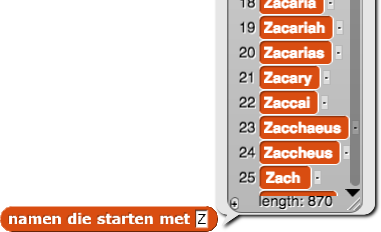

Selection Sort
Een van de populairste sorteeralgoritmes heet selection sort. Dit is hoe het werkt:
-
Het element dat vooraan komt zou de eerste naam in alfabetische volgorde kunnen zijn of het kleinste getal in een lijst.Stap 1. In een ongesorteerde lijst, vind een manier om het voorste element te vinden.
- Stap 2. Haal dat element uit de lijst en plaats het op de eerste plek.
- Stap 3. Gebruik selection sort om de overige elementen te sorteren. Als er geen elementen over zijn ben je klaar.
- Probeer eerst selection sort te begrijpen voordat je code gaat schrijven. Sta op en vorm een lijn met de hele klas. Volg daarna het proces van selection sort om iedereen op naam te sorteren.
- Hoe is selection sort een voorbeeld van recursie? Wat is het basisgeval?
Om een selection sortblok te schrijven in Snap!, heb je code nodig voor een basisgeval
- Bouw het
voorste inblok. Voor namen geeft dit alfabetisch de eerste naam in een lijst:

- Write code die de index van het voorste item vindt. Deze waarde is 8 voor de lijst met namen hierboven. (Deze stap is misschien overbodig, afhankelijk van je algoritme. Kijk of je de volgende stap zonder de index kan doen.)
-
Je kan een deel van het werk in Hoofdstuk 5 Les 1 Pagina 2: Analyseren en Zoekopdrachten Verbeteren handing vinden.Schrijf code die een nieuwe lijst aanmaakt zonder het voorste element. Er is daar maar één manier voor!
- BOuw de recursieve rapporteur
selection sort.

- Hoe vaak roept
selection sortzichzelf aan?
"H8L2-SelSort"
Net als recursieve commando's, lijken recursieve rapporteurs magisch, omdat een deel van de code zichzelf
aanroept.
Recursieve rapporteurs werken omdat iedere aanroep een kleinere invoer gebruikt dan de vorige,
totdat het basisgeval bereikt wordt. Nadat het basisgeval bereikt is, wordt het resultaat beetje bij beetje
gebouwd omdat iedere aangeroepen rapporteur het result rapporteert aan de rapporteur die hem aangeroepen
heeft.
- Dit bestand met de populariteit
van namen in 2014 bevat een grote lijst van babynamen uit 2014. Importeer de data en bouw
daarna een algoritme dat een alfabetische lijst met alle namen geeft, die start met een gegeven
letter:
